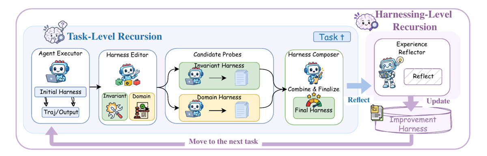
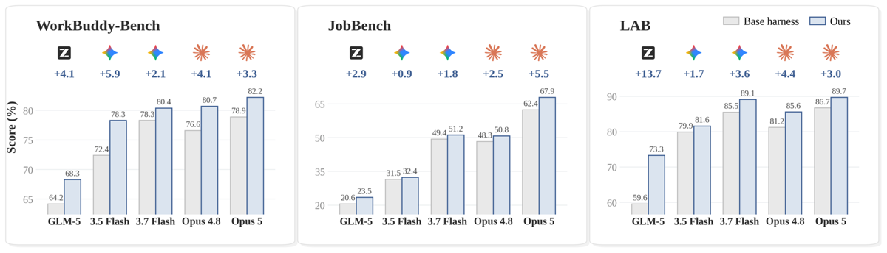
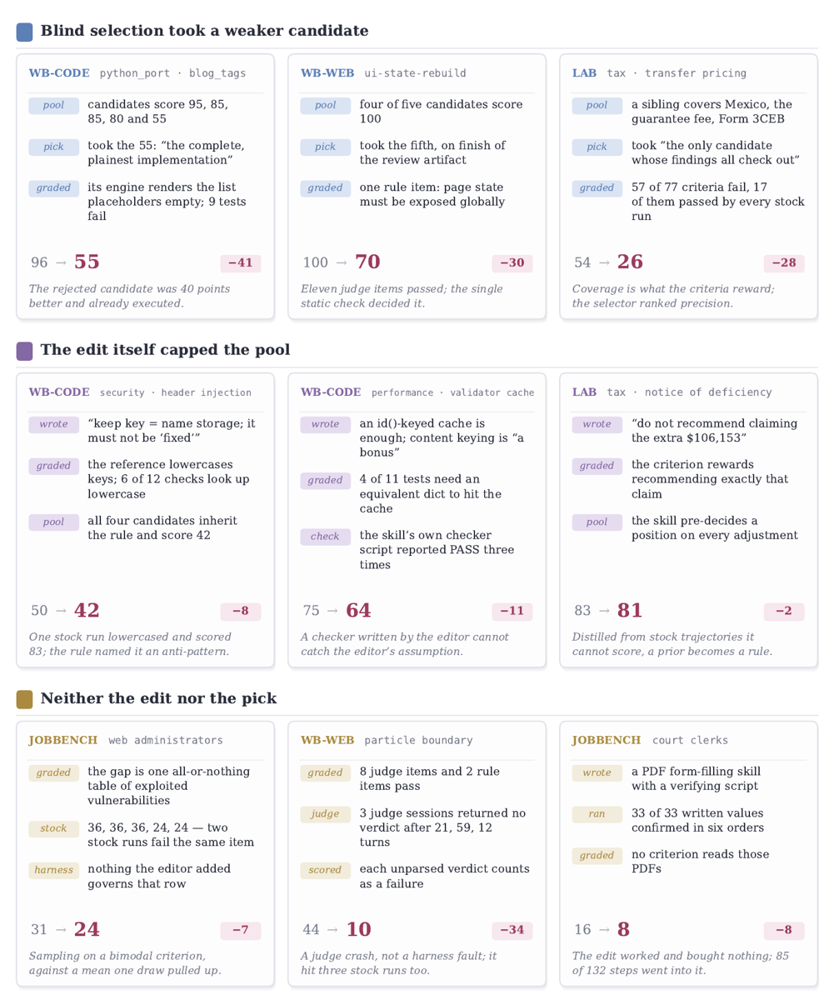

TL;DR — pipeline test-time qui réécrit, tâche par tâche et sans aucun label de correction, les 8 fichiers du harness d'un agent (system prompt, guardrails, memory, tool guidance, skills, scripts, subagents, plugin TS), en s'appuyant sur un contraste comportemental entre une exécution de référence et des candidats probés dans des conditions appariées ; les harnesses adoptés et les « leçons » sont capitalisés dans une library qui guide les tâches suivantes.
Claim principal précis : un seul pas contrastif (k=1) améliore la moyenne sur les 12 paires benchmark×configuration (3 benchmarks × {Gemini 3.5 Flash, GLM-5} × {OpenCode, Codex}) par rapport au harness de base, avec au maximum +11,5 pts sur WorkBuddy-Bench, +4,5 pts sur JobBench, +11,8 pts de Partial sur LAB ; la recursion parallèle k=5 ajoute jusqu'à +3,9 / +4,2 / +6,7 [abstract, §3.2]. Aucune mise à jour de poids, aucune reward optimisée : ce n'est pas du RL, c'est de la recherche test-time guidée par LLM. Le papier est à lire ici comme un catalogue de design de harness + un critère de rétention sans vérifieur gold, pas comme un env RL.
⚠️ Deux réserves à poser d'emblée, développées en §7 : (i) le gain de référence est pris contre le harness de base à 1 rollout, alors que Harness² en consomme 4 (k=1) à 20 (k=5) plus 3 à 16 sessions d'édition Claude Opus 4.8 ; (ii) le +11,8 sur LAB est la configuration la plus faible (GLM-5/OpenCode), et contre la meilleure baseline du tableau (ReasoningBank, 71,3) le gain tombe à +0,1.
niklaus2026 — Don't train the model, evolve the harness : 100 tâches test held-out, stratifiées par practice area, forcées à couvrir les 4 work types et toute la gamme de tailles de contexte (dont un matter de plus d'un million de tokens), + 24 tâches dev (une par practice area). « Every LAB number in this paper is on the 100 test tasks » ; les 24 dev ne servent qu'à Meta-Harness comme search set [App. B].8 composants, chacun monté comme un fichier dans le runtime, donc « une édition est un diff » [Tab. 5 components, App. C.3]. Décomposition empruntée à AHE (lin2026agentic), étendue d'un composant [§2.1].
| # | Composant | Fichier | Activation | Rôle |
|---|---|---|---|---|
| C1 | System prompt | systemprompt.md |
chaque appel | persona + procédure top-level |
| C2 | Guardrails | guardrails.md |
chaque appel | contraintes dures, hors tâche/outil |
| C3 | Memory | LongTermMEMORY.md |
chaque appel | faits de domaine durables, persistés entre tâches d'un domaine |
| C4 | Tool guidance | tool_descriptions/tool_guidance.md |
chaque appel | quand/comment utiliser chaque outil existant |
| C5 | Subagents | sub_agents/<n>/AGENT.md |
outil task |
worker délégué dans sa propre fenêtre de contexte, ne renvoie que son résultat ; seul composant qui ajoute un contexte d'inférence |
| C6 | Skills | skills/<n>/SKILL.md + skills/<n>/scripts/* |
outil skill |
procédure spécialiste chargée à la demande (coût nul si non invoquée) |
| C7 | Scripts | scripts/<name>.py |
via bash | capacité déterministe exécutée au lieu d'être raisonnée token par token |
| C8 | Plugin | plugin/<name>.ts |
dans la boucle d'outils | hook autour des tool calls et des frontières de tour : enforce au lieu d'instruire |
AGENTS.md, les composants on-demand sont les mêmes [App. C.1].context/task.md, context/harness/ (éditable en place), context/source/, trajectoires complètes, deliverables produits, context/library/ [App. F].context/harness/ avec ses outils normaux. « Your edits on disk ARE the proposal — there is no separate format ». Fichiers non touchés = hérités ; supprimer un fichier = retirer le composant ; KEEP_BASE dans les notes = ne rien changer [App. F, Prompt 1].systemprompt.md ou guardrails.md, dans la même édition (« the most violated rule here by a wide margin ») ; (2) pas d'accolades de template dans le texte always-on (rendu Jinja StrictUndefined — un {{ tue le job) ; (3) tout script nommé doit exister et voyager avec le skill.Tâche draft-markup-of-procedural-order : « Review a procedural order against the baseline and deliver a marked-up version ». Base harness : 44,4. Échecs diagnostiqués : (1) le markup reste dans la couche track-changes de Word ; (2) converti en texte, le markup disparaît. Harness composé : édition de C6 Skills (SKILL.md, 4 851 o) — « §4 Make the markup SURVIVE as text […] native tracked changes collapse and comments are dropped, so a redline built only from them reads as a clean rewrite → Record deletions and insertions as in-body character markup: strikethrough for deleted, bold for inserted » — plus C2 Guardrails (156 o) : « When the task is to review, redline, mark up, annotate or object to a supplied instrument against a baseline, load the redline-review skill. » Re-run : 94,5 (+50,1).
⚠️ À retenir : le plus gros gain LAB documenté du papier est un artefact de format/plomberie d'évaluation (le juge lit le .docx comme du texte), pas du raisonnement juridique.
| Benchmark | Type | Juge | Métrique |
|---|---|---|---|
| WorkBuddy-Bench | hybride : checks déterministes (hidden tests, file & structure checks) + items jugés par LLM et VLM | Gemini 3.5 Flash « where one is needed » | fraction des checks passés [App. B] |
| JobBench | rubrique pondérée | Claude Opus 4.8 | score pondéré total / score max [App. B] |
| LAB | LLM-as-judge pur, par critère, aucun check exécutable | Claude Sonnet 4.6 | Partial = per-criterion pass rate [App. B] |
⚠️ Fiabilité des juges : jamais mesurée. Aucun accord juge/humain, aucune précision, aucun taux de faux positifs/négatifs, nulle part dans le papier. Et sur JobBench le juge (Opus 4.8) est le même modèle que l'editor, le composer et le selector → risque de self-preference non discuté. Sur WorkBuddy le juge (Gemini 3.5 Flash) est l'un des deux executors. Le papier documente par ailleurs des pannes de juge : « 3 judge sessions returned no verdict after 21, 59, 12 turns ; each unparsed verdict counts as a failure » (44 → 10) [Fig. 14 failure_cards].
Aucun score, aucune rubrique, aucune réponse de référence n'entre dans le pipeline. Une modification de harness est retenue par une chaîne de 5 filtres :
KEEP_BASE est une réponse valide et explicitement encouragée : « Adaptation that the evidence does not argue for is a regression ».
- Format de notes imposé, auditable : kept|revised|dropped -> <edit> -> <trajectory moment or base-set pattern, with counts, e.g. 'failed in (k-1)/k base rollouts'>.context/source/ […] verify the facts, data, names, figures and constraints a candidate asserts — do not take its word for them […] Reject invented specifics. Where the source is silent, prefer the candidate that says so over the one that fills the gap confidently. »helped / hurt / no observed effect / confounded, avec « prefer confounded » dès que plusieurs composants changent à la fois sans exécution qui en isole un, ou qu'un seul rollout soutient la différence. « A confounded row is a useful record; an invented attribution poisons the library for every later task. »
- Au plus une entrée durable, et seulement si les lignes la soutiennent : cue (forme de situation, pas les faits de la tâche), lesson (opération applicable et vérifiable, nommant le composant), evidence, confidence. « A lesson resting only on confounded rows is a guess: narrow it or decline. » Sinon → NO_ENTRY.
- Calibrage donné en exemple : trop générique = « be thorough » ; trop spécifique = « the fee rose to 250 on Jan 1 » ; bon niveau = « when an instrument performs several sequential acts and one of them terminates the actor's own authority, order them so the terminating act comes last ».Granularité : outcome-level, non scalaire — pas de score, pas de crédit partiel agrégé ; décision par édition (kept/revised/dropped), puis sélection par artefact. Termes additionnels : aucun terme de format/longueur numérique ; le contrôle de format est un gate binaire (validator) et un critère ordonné (CONFORMANCE).
Anti-hacking explicitement conçu [App. F] — à noter, c'est inhabituellement soigné : - bloc « WHAT YOU DO NOT HAVE » dans tous les prompts : « There is no rubric, grading criteria, answer key, reference solution or score anywhere in your context […] never write a phrase like 'the grader expects' into anything you produce » ; - guard qui refuse tout working directory contenant verdict/rubrique/score [App. C.2] ; - « THE DELIVERABLE'S SHAPE BELONGS TO THE REQUEST, NOT TO YOU. A harness changes HOW the agent works; it must never change WHAT SHAPE it delivers » — anti-embellissement ; - DOM : « Never invent an authority, identifier, standard or citation. Point to an authorized source; asserting it requires evidence. » (pertinence juridique directe) ; - défense prompt-injection (§2).
⚠️ Robustesse du vérifieur : jamais attaquée ni testée. Aucun red-teaming du selector ni du composer. Les régressions documentées [App. D.5] sont des échecs observés, pas des attaques.
⚠️ Tension de design à signaler : le prompt Editor INV ordonne d'écrire les faits vérifiés du workspace dans les composants — « VERIFIED FACTS ABOUT THIS WORKSPACE ARE THE MOST VALUABLE THING YOU CAN ENCODE […] WRITE THE FACT ITSELF into the relevant component — 'in this workspace, role X in file A maps to position Y in file B' — not merely the procedure for rediscovering it » [App. F Prompt 1]. Le harness adopté devient donc en partie un cache des découvertes faites sur l'instance. Le prompt DOM contre-balance (« Never store this matter's facts as durable memory: they are wrong anchors for the next task »), mais cela (a) gonfle mécaniquement le gain single-task, (b) explique pourquoi le transfert cross-benchmark s'érode (§7), (c) brouille la frontière entre « améliorer le harness » et « résoudre la tâche ».
venkatraman2025rsa, mais « on executable harnesses and their behavioral consequences rather than reasoning outputs »), soit en profondeur (sequential recursion, self-refine madaan2023selfrefine appliqué au harness) [§2.2.2].Section inhabituellement honnête : 9 régressions documentées carte par carte [App. D.5, Fig. 14 failure_cards], regroupées en 3 familles. ⚠️ Les scores cités y sont rétrospectifs et non disponibles au pipeline.
Famille 1 — le selector aveugle choisit un candidat plus faible (3 cas) :
| Cas | Comportement | Détection | Correction proposée |
|---|---|---|---|
WB-code python_port·blog_tags |
pool à 95, 85, 85, 80, 55 ; le selector prend le 55 (« the complete, plainest implementation ») ; son moteur rend les placeholders de liste vides, 9 tests échouent. 96 → 55 (−41) | éval rétrospective | selection équilibrant mieux couverture et précision |
WB-web ui-state-rebuild |
4 candidats sur 5 à 100 ; le selector prend le 5e sur le « finish » de l'artefact de review ; un seul rule item (page state exposé globalement) décide. 100 → 70 (−30) | idem | idem |
LAB tax · transfer pricing |
un candidat frère couvrait le Mexique, la guarantee fee, le Form 3CEB ; le selector prend « the only candidate whose findings all check out » ; 57 des 77 critères échouent, dont 17 passés par chaque stock run. 54 → 26 (−28). Note des auteurs : « Coverage is what the criteria reward; the selector ranked precision. » | idem | idem |
Famille 2 — l'édition elle-même plafonne le pool (prémisse fausse propagée à tous les candidats, pertes de 2 à 11 pts) :
| Cas | Comportement | Détection | Correction |
|---|---|---|---|
WB-code security·header injection |
le harness écrit « keep key = name storage; it must not be 'fixed' » ; la référence lowercase les clés, 6 checks sur 12 cherchent en lowercase ; les 4 candidats héritent de la règle et plafonnent à 42. 50 → 42 (−8) — « one stock run lowercased and scored 83; the rule named it an anti-pattern » | rétrospectif | probes qui challengent les hypothèses partagées |
WB-code performance·validator cache |
« an id()-keyed cache is enough; content keying is a bonus » ; 4 tests sur 11 exigent un dict équivalent ; le checker script écrit par l'editor rapporte PASS 3 fois. 75 → 64 (−11) — « A checker written by the editor cannot catch the editor's assumption » | rétrospectif | idem |
LAB tax · notice of deficiency |
le harness écrit « do not recommend claiming the extra $106,153 » ; le critère récompense exactement cette recommandation ; le skill « pre-decides a position on every adjustment ». 83 → 81 (−2) — « Distilled from stock trajectories it cannot score, a prior becomes a rule » | rétrospectif | idem |
Famille 3 — ni l'édition ni le choix (variance, pannes de juge, critères non couverts) : JobBench web administrators 31 → 24 (gap = une table tout-ou-rien, stock runs 36/36/36/24/24, bimodal) ; WB-web particle boundary 44 → 10 (3 sessions de juge sans verdict après 21, 59, 12 tours ; chaque verdict non parsé compte comme échec) ; JobBench court clerks 16 → 8 (« the edit worked and bought nothing; no criterion reads those PDFs »).
Comportements émergents : - Positif : le cas JobBench « all eight components written » [Fig. 19 case_jbhooks, Opus 5 executor+editor] — la recherche s'étale jusqu'à épuiser le budget et les fichiers restent non écrits près de la deadline ; le harness composé ajoute un plugin qui appose un avertissement aux résultats d'outils après un nombre fixe d'appels sans artefact, un subagent qui renvoie des tables citables dans son propre contexte, et de la mémoire durable. 72,0 → 100,0. - Positif : fiabilité d'outils en hausse sans raccourcissement de l'exécution [Tab. 7]. - Négatif structurel : sans probe, l'édition de harness par LLM NUIT — refinement direct sans exécutions de référence ni library fait chuter WB-code de 73,4 → 63,2 et WB-web de 69,9 → 65,0 [§4, Fig. 7 library_transfer gauche].
⚠️ Mon évaluation : le papier ne parle jamais de « reward hacking » — c'est cohérent, puisqu'il n'y a aucune reward à hacker côté pipeline (rien de scorable n'entre dans le contexte, et c'est verrouillé par un guard + des blocs de prompt). Ce qu'il documente à la place est le mode d'échec dual : au lieu d'exploiter le vérifieur, le système désapprend le vérifieur — le selector optimise la précision quand la métrique récompense la couverture (LAB, −28), et un prior du modèle se cristallise en règle dure contre le critère (LAB, −2). Pour un env juridique, c'est exactement la pathologie à anticiper : sans gold, le système converge vers ce qui a l'air défendable, pas vers ce qui est crédité.
harness2/substrate/ et harness2/benchmarks/).J'ai retracé 24 chiffres de l'abstract, de l'intro et du corps. L'arithmétique est cohérente partout (y compris des recoupements non triviaux : la « plus forte baseline fixe » sur WB-web déduite de l'App. D.6 redonne exactement 72,5 = Codex/Web de la Tab. 1).
| Chiffre annoncé | Où il est annoncé | Source dans le papier | Verdict |
|---|---|---|---|
| +11,8 pp sur LAB | abstract ; §1 ; §3.2 | Tab. 2 : GLM-5/OpenCode, Partial 59,6±2,7 → 71,4±2,9 = +11,8 | sur-généralisé — arithmétiquement exact, mais (i) le corps ne nomme jamais la configuration (contrairement au +11,5 de WB, explicitement attribué) ; (ii) c'est l'executor le plus faible sur le harness de base le plus faible ; (iii) contre la meilleure baseline du tableau (ReasoningBank 71,3±1,3) le gain tombe à +0,1 ; (iv) budget non apparié (voir ci-dessous) |
| +11,5 pts sur WorkBuddy-Bench | abstract ; §1 ; §3.2 | Tab. 1 : GLM-5/OpenCode Avg 64,2±1,4 → 75,7±2,2 = +11,5 ; §3.2 l'attribue explicitement | confirmé |
| +4,5 pts sur JobBench | abstract ; §1 ; §3.2 | Tab. 2 : Gemini/OpenCode 31,5±1,1 → 36,0±2,3 = +4,5 | confirmé |
| « consistently improves […] over their base harnesses » sur 3 benchmarks × 4 configs | abstract | 12/12 deltas positifs vérifiés (WB +5,1/+3,0/+11,5/+10,9 ; JB +4,5/+1,4/+3,6/+1,2 ; LAB +2,0/+4,0/+11,8/+7,8) | confirmé en moyennes, mais ⚠️ 4 des 12 deltas tiennent dans 1 SD (JB Gemini/Codex +1,4 avec SD 2,6 et 3,5 ; JB GLM/Codex +1,2 ; LAB Gemini/Codex +4,0 avec SD 4,5 ; WB Gemini/Codex +3,0 avec SD 1,6 et 2,0) |
| Recursion ajoute jusqu'à +3,9 / +4,2 / +6,7 | abstract ; §1 | Lignes + Recursion : WB {+3,3,+2,9,+3,9,+3,0} ; JB {+3,0,+4,2,+4,2,+3,1} ; LAB | confirmé |
| « Harness² exceeds the compared baselines on WB Avg. and JobBench Score in all four configurations; on LAB Partial, Meta-Harness leads for Gemini under Codex » | §3.2 | Tab. 1 et 2 | confirmé — et c'est un aveu : sur LAB/Codex/Gemini, Meta-Harness 76,5±2,1 > Harness² 75,6±4,5 |
| « ReasoningBank falls as much as 6,6 points below the base harness on coding tasks » | §3.2 | Tab. 1 : GLM-5/Codex/Code 56,8 → 50,2 = −6,6 | confirmé |
| « Harness Scaling underperforms the base in seven of the twelve pairs » | §3.2 | recompté sur Tab. 1 (Avg.) et Tab. 2 : exactement 7 | confirmé |
| gaps OpenCode–Codex JobBench 2,4 et 3,0 → 0,5 ; WB Gemini 2,1 → 0,4, GLM-5 0,2 → 1,3 | §3.2 | recalculé depuis Tab. 1/2 + deltas de recursion | confirmé (et honnête : « Recursion therefore does not uniformly close the gap ») |
| ablations : library −3,1/−1,8 ; scoping −2,9/−3,7 ; composition −1,6/−1,9 | §4 | Tab. 3 (77,5/74,4/74,6/75,9 ; 36,0/34,2/32,3/34,1) | confirmé |
| composants : skills −3,6 (Code) / −6,9 (Web) ; scripts −7,4 (Office) ; moyennes −5,3/−3,7/−1,5 | App. D.1 | Tab. 6 | confirmé |
| gains compute 4,5 → 7,5 (JB) et 5,1 → 8,4 (WB) de k=1 à k=5 | §4 | recalculé depuis Tab. 1/2 | confirmé |
| library k=5 : +0,9 / +4,4 / +5,1 ; direct editing 73,4 → 63,2 et 69,9 → 65,0 | §4 | Fig. 7 (valeurs lues : 74,3 / 74,3 / 79,1 vs base 73,4 / 69,9 / 74,0 ; w/o library 63,2 / 65,0 / 77,1) | confirmé |
| transfert JobBench → WB : +0,6 / +0,5 / +2,9 | §4 | Fig. 7 droite (76,5→77,1 ; 76,4→76,9 ; 79,5→82,4) | confirmé |
| leave-one-out 77,5 → 79,4 et 36,0 → 37,7 (+1,9 / +1,7) | §4 ; App. D.2 | Fig. 11 | confirmé (et les auteurs désamorcent eux-mêmes : « offline reuse analysis rather than an estimate of online gains. Repeated execution may also contribute ») |
| « All five models […] improve on every benchmark » ; Opus 5 +3,3/+5,5/+3,0 ; GLM-5 +13,7 sur LAB | §4 | Fig. 8 same_model : 15/15 deltas positifs ; LAB Opus 5 86,7→89,7 ; GLM-5 59,6→73,3 | confirmé |
| cross-model : GLM-5 +17,3 sur Code (58,5→75,8) ; Gemini 3.7 Flash +0,3 / +6,4 ; Opus 4.8 +2,6 / +1,1 | App. D.3 | Fig. 12 | confirmé, ⚠️ micro-incohérence : base GLM-5 WB-code = 58,5 ici vs 58,4±5,2 en Tab. 1 |
| production harnesses : +4,6 / +5,8 / +4,9 sur la meilleure fixe ; +7,4 / +8,4 / +9,4 sur OpenCode | App. D.6 | Fig. 13 ; recalcul cohérent avec Tab. 1 et Tab. 6 | confirmé |
| tool-use : −11,0 % / −37,5 % ; +19,7 % / −36,8 % ; +21,2 % / −20,0 % | App. D.4 | Tab. 7 | confirmé (tous les pourcentages recalculés) |
| library provenance 22 % (LAB, WB-office) / 47 % (JobBench) ; 2–10 % gardent ≥ moitié des lignes ; skills+scripts ≈ la moitié des éditions | App. D.2 | Fig. 10 library_reuse | introuvable hors figure (valeurs non tabulées ; non recalculables) |
| coût : Pareto frontier | §4 | Fig. 6, JobBench + WB seulement | sur-généralisé — le texte dit « Both evaluated Harness² configurations lie on the empirical Pareto frontier » sans restreindre ; LAB n'est pas dans l'analyse de coût, et Best-of-k est absent du plot |
Verdict 7.0 : cohérence interne excellente (case coherence vraie). Les deux réserves ne portent pas sur l'arithmétique mais sur le cadrage : le +11,8 LAB non attribué à sa configuration, et le Pareto annoncé sans LAB ni Best-of-k.
Tab. 2, LAB Partial, mean±SD sur 3 runs à ordre de tâches mélangé, 100 tâches test, juge Claude Sonnet 4.6 :
| Executor | Harness init. | Base | ReasoningBank | Meta-Harness† | Harness Scaling | Harness² k=1 | + Recursion k=5 |
|---|---|---|---|---|---|---|---|
| Gemini 3.5 Flash | OpenCode | 79,9±0,6 | 77,3±3,1 | 81,6±3,9 | 78,9±4,3 | 81,9±0,6 (+2,0) | +2,6 → 84,5 |
| Gemini 3.5 Flash | Codex | 71,6±1,3 | 74,8±0,9 | 76,5±2,1 | 67,9±2,4 | 75,6±4,5 (+4,0) | +2,9 → 78,5 |
| GLM-5 | OpenCode | 59,6±2,7 | 71,3±1,3 | 60,0±1,1 | 67,8±2,8 | 71,4±2,9 (+11,8) | +6,7 → 78,1 |
| GLM-5 | Codex | 58,1±2,3 | 63,8±3,3 | 59,0±1,4 | 63,7±2,8 | 65,9±2,7 (+7,8) | +4,8 → 70,7 |
† optimisé hors-ligne sur les 24 tâches dev.
niklaus2026, stratifiées par practice area, 4 work types, jusqu'à >1 M tokens de contexte. Les 24 dev ne servent qu'à Meta-Harness. Pas de sélection d'hyperparamètres sur le test annoncée, mais ⚠️ la library de Harness² se construit sur ce même jeu test pendant l'éval (stream one-pass, pas de replay).Le corpus établit que les gains d'auto-amélioration de harness s'érodent hors distribution. Ce papier mesure la généralisation — et la confirme à la baisse.
| Ablation | WorkBuddy Avg. | Δ | JobBench | Δ | Lecture |
|---|---|---|---|---|---|
| Harness² (k=1, Gemini/OpenCode) | 77,5 | — | 36,0 | — | référence [Tab. 3] |
| w/o scoping (INV/DOM → 2 editors génériques, même nombre de candidats, même budget de probe) | 74,6 | −2,9 | 32,3 | −3,7 | ingrédient n°1 sur JobBench |
| w/o library (améliore chaque tâche mais ni lit ni écrit) | 74,4 | −3,1 | 34,2 | −1,8 | ingrédient n°1 sur WB |
| w/o composition (probe les 2 candidats puis prend celui que l'évidence favorise) | 75,9 | −1,6 | 34,1 | −1,9 | le plus faible des trois |
Ablation de composants sur le harness déjà amélioré (k=5, sans relancer l'amélioration) [Tab. 6] : full 80,8 / 78,3 / 83,4 ; w/o skills 77,2 / 71,4 / 77,9 (−5,3 de moyenne) ; w/o scripts 79,3 / 76,0 / 76,0 (−3,7, −7,4 sur Office) ; w/o prompt 78,8 / 76,0 / 83,1 (−1,5). Donc ce sont les composants on-demand (skills, scripts) qui portent le gain, pas le texte always-on — cohérent avec l'instruction « ALWAYS-ON PROSE IS THE EXPENSIVE OPTION » [App. F]. Les auteurs précisent honnêtement : « The results support contributions from multiple component groups, but do not establish additive effects ». Confirmé par la provenance : skills + scripts ≈ la moitié des éditions* sur chaque benchmark [App. D.2].
github.com/google-research/harness2, Apache-2.0, harness2/{core,benchmarks,substrate,cli}, scripts/run_lab.sh, scripts/split_tasks.py, docs/{SETUP,BENCHMARKS,EXPERIMENTS}.md, poussé le 2026-10-14 ; prompts intégralement recopiés en App. F (les blocs par benchmark sont « in the code release »). ⚠️ Les données LAB restent propriétaires Harvey.Verdict : plausible mais fragile sur le chiffre phare, solide sur la mécanique. La mécanique (probe indispensable, scoping INV/DOM, composants on-demand > prose, critère de rétention) est appuyée par des ablations propres, reproductibles et cohérentes. Le +11,8 sur LAB, lui, est un cas particulier : executor le plus faible, harness de base délibérément vide, budget 4–7× non apparié, gain nul contre la meilleure baseline, et contrôle budget-matched absent du benchmark. Pour un executor Gemini fort, le papier lui-même donne +1,7 à +4,6.

Ce qu'il faut voir : les deux boucles. En bas-gauche, la boucle task-level : Agent Executor (harness initial → trajectoire/output) → Harness Editor scindé en deux rôles disjoints (Invariant = procédure, Domain = connaissance praticien) → Candidate Probes (chaque harness candidat ré-exécuté sur la même tâche) → Harness Composer qui combine et finalise. À droite, la boucle harnessing-level : un Experience Reflector lit tout le dossier d'amélioration et met à jour l'Improvement Harness (library), qui est ce qui est transmis à la tâche suivante — pas le harness d'exécution, qui repart de H₀ à chaque tâche. Le point de design à retenir : ce qui persiste, ce sont des composants exécutables + uneEXPERIENCE.md avec son cue, jamais un harness spécialisé hérité en aveugle.

Ce qu'il faut voir : le panneau LAB, à droite, qui est la vraie réponse à « que vaut ce papier pour Harvey LAB ». Les gains décroissent avec la force de la base : GLM-5 59,6→73,3 (+13,7), Gemini 3.5 Flash 79,9→81,6 (+1,7), Gemini 3.7 Flash 85,5→89,1 (+3,6), Opus 4.8 81,2→85,6 (+4,4), Opus 5 86,7→89,7 (+3,0). Autrement dit : le +11,8 de l'abstract est le régime « base pauvre » ; sur un Gemini déjà fort, LAB bouge de 2 à 4 points. Second enseignement, positif : les 15 deltas sont positifs sans editor plus fort que l'executor — le modèle peut raffiner son propre harness, ce qui lève la dépendance à Opus 4.8 des tables principales.
Ce qu'il faut voir : les deux cartes LAB. En haut à droite,tax · transfer pricing : le selector aveugle prend « le seul candidat dont tous les constats se vérifient », 57 des 77 critères échouent, dont 17 que tout run stock passait — 54 → 26. La ligne de conclusion est le vrai enseignement : « Coverage is what the criteria reward; the selector ranked precision. » En bas à droite, tax · notice of deficiency : le harness a écrit « do not recommend claiming the extra $106,153 » alors que le critère récompense exactement cette recommandation — « a prior becomes a rule ». Et au milieu, le cas validator cache : « A checker written by the editor cannot catch the editor's assumption » — la limite structurelle de toute auto-vérification. Pour un env juridique : ces trois cartes décrivent exactement les trois façons dont un système sans gold se trompe de cible.
| Ingrédient | Choix du papier | Équivalent juridique | Transfert | Ce qui manque |
|---|---|---|---|---|
| Source des tâches | aucune tâche créée ; 3 benchmarks repris, split LAB hérité (100 test / 24 dev, stratifié par practice area et taille de contexte) [App. B] | LAB tel quel ; en interne, stream de matters réels par practice area | direct — le papier est déjà sur LAB | aucun générateur de tâches ; rien sur la couverture juridictionnelle ni sur l'évolution des sources dans le temps |
| Vérifieur | aucun gold ; rétention par contraste comportemental apparié + Composer + validator dur + selector aveugle + Reflector à verdicts helped/hurt/no observed effect/confounded [§2.2, App. F] |
exactement le problème du droit : pas de vérité exacte, réponses longues et argumentées | direct — c'est l'apport central, et il est conçu pour l'absence de gold | aucune validation juge↔humain ; le critère n'est jamais red-teamé ; le papier montre lui-même que le selector peut se tromper de métrique (−28 sur LAB) |
| Rubrique de sélection | 6 critères ordonnés : DELIVERY → CONFORMANCE → FIDELITY (vérifier chaque affirmation contre context/source/, rejeter les spécificités inventées, préférer le candidat qui dit « la source est muette ») → INTERNAL CONSISTENCY → OPERATIONAL FITNESS → FINISH [App. F Prompt 5] |
décomposition de reward pour un livrable juridique long ; FIDELITY = vérification de citations ; « prefer the candidate that says so » = calibrage de l'incertitude | direct — recopiable presque tel quel comme grille de reward | aucune pondération, aucun score scalaire ; aucune mesure de l'accord de cette grille avec des juristes |
| Harness / outils | 8 composants-fichiers, édition = diff ; always-on coûteux, on-demand gratuit ; plugin TS = le seul levier qui enforce [Tab. 5, App. F] | skills par type d'instrument (redline, mémo, due diligence), scripts déterministes (extraction de clauses, conversion .docx), subagent de recherche à gros input/petit output, plugin interdisant la sortie sans livrable ou sans citation vérifiée | direct — le cas LAB arbitration (skill redline + guardrail, 44,4 → 94,5) est littéralement un livrable juridique | rien sur multi-juridiction ; rien sur la péremption des sources dans LongTermMEMORY.md |
| Algo | aucun RL ; recherche test-time, poids gelés | post-training Gemini Law | non tel quel — mais les verdicts du Reflector (helped/hurt/confounded) sont un signal de préférence prêt à être consommé par du RL |
aucun gradient, aucune reward scalaire, aucune expérience de distillation du harness vers les poids |
| Curriculum | stream one-pass, ordre mélangé, library vide au départ, pas de replay ; library par domaine [§3.1, App. C.2] | stream de matters par practice area | adaptable | pas de curriculum par difficulté ; pas de politique de consolidation de library (reconnu en App. G) |
| Anti-hacking | guard qui refuse tout dossier contenant rubrique/verdict/score ; « never write 'the grader expects' » ; « the deliverable's shape belongs to the request » ; « never invent an authority, identifier, standard or citation » ; défense prompt-injection [App. C.2, F] | protection contre un agent qui apprend à plaire au juge LLM plutôt qu'à être juridiquement correct | direct — l'hygiène est exemplaire et peu coûteuse | jamais attaqué ; et l'échec observé n'est pas du hacking mais l'inverse (le système désapprend la métrique) |
Meilleur ingrédient à transposer — le critère de rétention sans gold, c'est-à-dire le triplet : (1) probe apparié (même tâche, même modèle, même env) comme seule source d'évidence recevable ; (2) règle de décision explicite « un défaut dans 1/k est du bruit, un défaut répété sur le base set est une propriété réelle ; nomme le moment de trajectoire ou l'édition est de la spéculation ; juge la baisse aussi lourdement que la hausse ; KEEP_BASE est une réponse » ; (3) verdict confounded par défaut quand rien n'isole un composant, et NO_ENTRY plutôt qu'une leçon mal fondée. C'est la seule recette du corpus qui attaque frontalement le point dur du droit — pas de vérifieur exact — et elle est publiée avec ses prompts et son code. ⚠️ Mais la preuve d'efficacité fournie est faible là où elle compte : sur LAB avec un Gemini fort, le gain est de 2 à 4 points, et le contrôle budget-matched est absent.
Expérience minimale — sur un slice LAB (dev 24 tâches pour itérer, puis les 100 test), Gemini sous harness stock, comparer à budget token strictement égal trois règles de rétention :
- (a) Harness² k=1 : 1 référence + 2 candidats scopés INV/DOM + 1 composé = 4 rollouts ;
- (b) Best-of-4 du harness de base, même selector aveugle, même rubrique ordonnée — le contrôle que le papier spécifie [App. B] mais ne rapporte pas sur LAB ;
- (c) base, 1 rollout.
Résultat attendu d'après ce papier : (a) − (c) ≈ +2 à +4,6 pts de Partial pour un Gemini fort [Fig. 8, Tab. 2], et (a) − (b) faible. Si (a) ≈ (b), le gain est du sampling test-time, pas du harnessing, et toute la ligne « recursive harnessing » tombe pour notre régime. Si (a) > (b) nettement, on a identifié un signal de rétention exploitable comme reward. Coût : 4 rollouts × 100 tâches × 3 seeds, plus les sessions d'editor — borné, et le code est publié (scripts/run_lab.sh).
Expérience n°2, plus proche de notre mandat : collecter les lignes <edits> du Reflector (composant, changement, différence d'exécution observée, verdict helped/hurt/no observed effect/confounded) comme dataset de préférence et RL-entraîner l'editor — le papier gèle explicitement l'editor (« Model weights, stage instructions, and the decision rule remain fixed » [§2.3]) et laisse ce créneau entièrement ouvert.
Questions à poser en interne chez GDM :
1. Notre harness LAB expose-t-il les mêmes pièges de format que ceux documentés ici ? Le plus gros gain LAB du papier (+50,1 pts, 44,4 → 94,5) vient d'un skill qui réécrit le redline en markup in-body parce que la couche track-changes de Word disparaît à la conversion en texte vue par le juge [Fig. 18]. Quelle fraction de notre headroom LAB est de la plomberie de livrable plutôt que du raisonnement juridique — et l'a-t-on mesurée avant de dépenser du post-training dessus ?
2. Le Partial de LAB est un per-criterion pass rate : il récompense la couverture. Un sélecteur optimisant la précision y perd 28 points sur une seule tâche de transfer pricing [Fig. 14]. Notre reward de post-training juridique sera-t-elle coverage-shaped — et est-ce ce que nous voulons pour un livrable qui sera relu par un avocat, où une affirmation non étayée coûte plus cher qu'une omission ?
3. Qui possède le split LAB 100/24 de niklaus2026 que ce papier réutilise, et l'utilisons-nous aussi ? Deux papiers du corpus partagent désormais ce split ; si nos évals internes en diffèrent, les chiffres LAB publiés ne sont pas comparables aux nôtres.